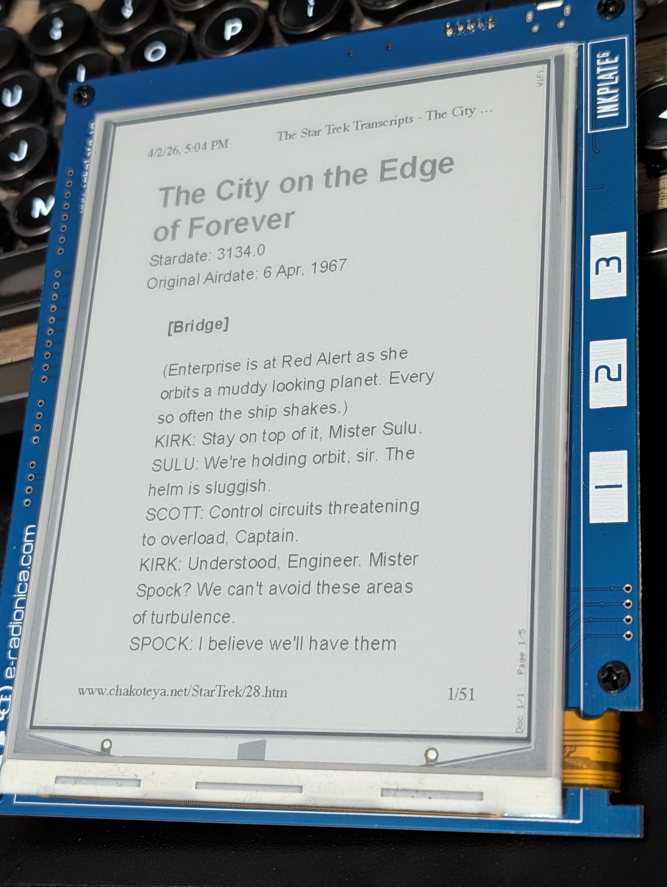

Turn your Inkplate into a wireless network printer. Print from any app on your Mac or Windows PC.

Download from arduino.cc and install it.
Open Arduino IDE. Go to File → Preferences (or Arduino → Settings on Mac).
In the Additional Board Manager URLs field, add:
https://github.com/SolderedElectronics/Dasduino-Board-Definitions-for-Arduino-IDE/raw/master/package_Dasduino_Boards_index.jsonGo to Tools → Board → Board Manager. Search for Inkplate and install Inkplate Boards.
Go to Sketch → Include Library → Manage Libraries. Search for InkplateLibrary and install it.
Open the project folder in Arduino IDE by opening inkplate_print.ino.
Open config.h and uncomment the line matching your Inkplate model:
For the Inkplate 6 (grayscale, 800×600), uncomment this line:
#define INKPLATE_MODEL_MONO // Inkplate 6 (800x600, 3-bit grayscale)And make sure the Color line is commented out:
// #define INKPLATE_MODEL_COLOR // Inkplate 6 Color (600x448, 7-color)This is the default — if both lines are commented, the Inkplate 6 mono is selected automatically.
For the Inkplate 6 Color (7-color, 600×448), uncomment this line:
#define INKPLATE_MODEL_COLOR // Inkplate 6 Color (600x448, 7-color)And make sure the Mono line is commented out:
// #define INKPLATE_MODEL_MONO // Inkplate 6 (800x600, 3-bit grayscale)The printer appears on your network as Inkplate-printer. To change this, edit:
#define PRINTER_NAME "Inkplate-printer"Insert a micro SD card into your computer (using an adapter if needed).
Format it as FAT32. On Mac: open Disk Utility, select the card, click Erase, choose format MS-DOS (FAT). On Windows: right-click the drive in File Explorer and choose Format → FAT32.
Insert the SD card into the Inkplate's micro SD card slot.
/print/ folder on the SD card automatically. You don't need to create any files or folders.
Connect the Inkplate to your computer via USB.
Go to Tools → Board and select:
| Model | Board selection |
|---|---|
| Inkplate 6 | e-radionica.com Inkplate6 |
| Inkplate 6 Color | Soldered Inkplate 6COLOR |
Go to Tools → Port and select the port for your Inkplate (usually /dev/cu.usbserial-... on Mac or COM3+ on Windows).
Click the Upload button (right arrow icon). Wait for the compile and upload to finish.
If the upload fails with a connection error, try holding the BOOT button on the Inkplate while pressing RESET, then release BOOT and click Upload again.
After uploading, the Inkplate boots and shows a setup screen:
On your phone or computer, connect to the WiFi network Inkplate-Setup (no password).
A captive portal page should open automatically. If not, open a browser and go to http://192.168.4.1.
Enter your WiFi network name (SSID) and password, then click Connect.
The Inkplate restarts and connects to your network. It displays its IP address on the screen.
Open Terminal and run:
lpadmin -p Inkplate -v ipp://Inkplate-printer.local:631/ipp/print -m everywhere
cupsenable InkplateThe printer now appears in System Settings → Printers & Scanners and in all applications' Print dialogs.
Go to Settings → Devices → Printers & scanners → Add a printer. The Inkplate should appear in the list. Select it and click Add device.
If it doesn't appear, click The printer I want isn't listed, choose Add a printer using a TCP/IP address, and enter:
Inkplate-printer.local631Open any document, web page, or email, and print it. Select Inkplate as the printer.
The Inkplate advertises a custom page size (~3.6" × 4.8") that matches the physical display. Most apps pick this up automatically. For best results:
echo "Hello" | lp -d Inkplate| Touchpad | Action |
|---|---|
| Pad 1 (left) | Previous page |
| Pad 2 (center) | Next page |
| Pad 3 (right) | Next document |
| All three (hold 3 seconds) | Delete current document (with confirmation) |
The bottom of the display shows: Doc 1/3 Page 2/5 WiFi
Documents are stored on the SD card in /print/doc_NNNN/ folders. When the SD card fills up, the oldest document is automatically deleted to make room for new prints.
dns-sd -B _ipp._tcp in Terminal (Mac) to check if the printer is broadcasting.cupsenable Inkplatelp) may produce blank pages for custom page sizes. Try printing from a real app (Safari, TextEdit) instead.| Feature | Inkplate 6 | Inkplate 6 Color |
|---|---|---|
| Display | 800 × 600 px | 600 × 448 px |
| Grayscale levels | 8 (3-bit) | N/A |
| Colors | N/A | 7 (black, white, green, blue, red, yellow, orange) |
| Partial display refresh | Yes (1-bit mode) | No |
| Dithering | Floyd-Steinberg to 8 gray levels | Floyd-Steinberg to 7-color palette |
| Config define | INKPLATE_MODEL_MONO | INKPLATE_MODEL_COLOR |
| Board in Arduino IDE | e-radionica.com Inkplate6 | Soldered Inkplate 6COLOR |